Bases de datos orientadas a búsquedas: Elasticsearch¶
Conceptos de ElasticSearch¶
- Desarrollado en Java
- Open source
- Distribuido
- Escalable
- Permite las búsquedas en información masiva casi en tiempo real y aplicar algoritmos de relevancia
-
Basado en la librería Apache Lucene
- Importante librería de análisis e indexación de textos.
- Se basa en índices invertidos
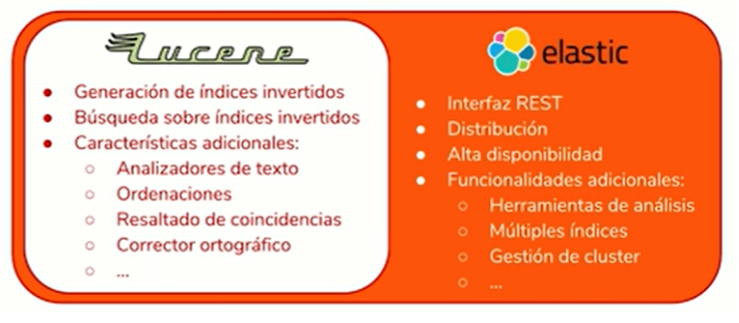
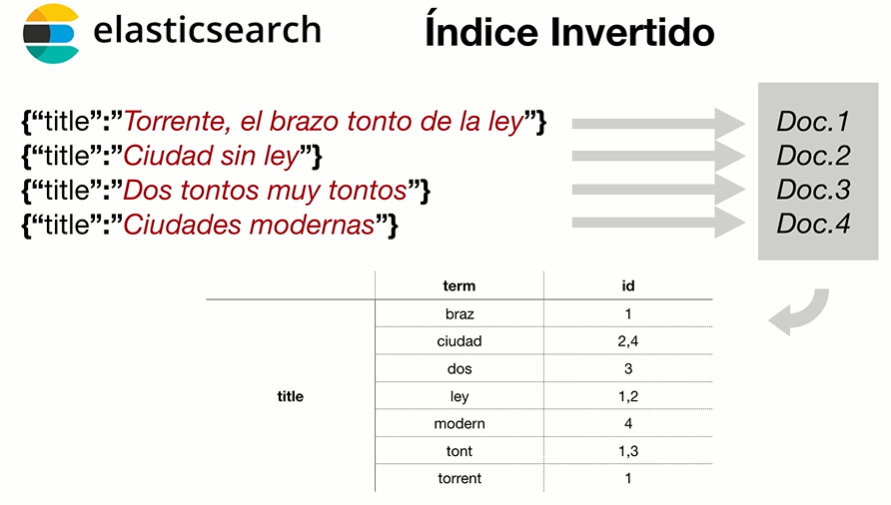
Casos de uso¶
Ejemplos de proyectos apoyado con elasticsearch
Base de datos de los telediarios
Casos de uso explicados en la web oficial
Proceso de indexación de un documento¶
Cuando insertamos un documento, el sistema lo indexa realizando el siguiente proceso
- Tokenización: Trocear el texto en sus palabras
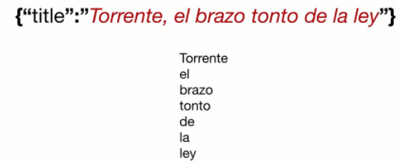
- Análisis: Depende del análisis que se quiera realizar. Podemos eliminar palabras, buscar sinónimo, quitar plurales, acortar palabras, corrector ortográfico...
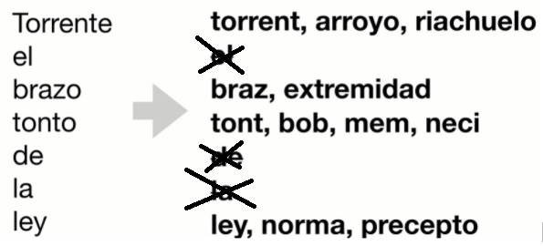
- Doc Values: Deshace el índice invertido para poder localizar el documento por término. La clasificación, las agregaciones y el acceso a los valores de campo en los scripts requieren un patrón de acceso a los datos diferente. En lugar de buscar el término y encontrar documentos, necesitamos poder buscar el documento y encontrar los términos que tiene en un campo.
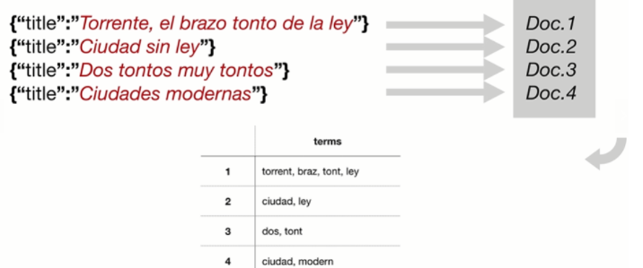
El proceso de análisis
El proceso de análisis se realiza en dos procesos:
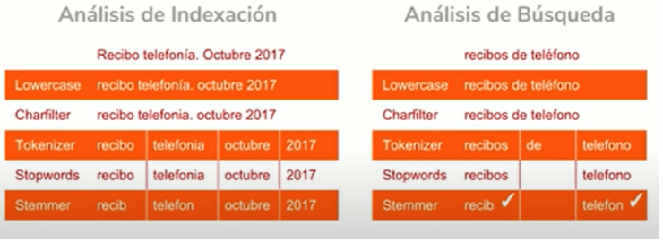
Ecosistema Elasticsearch: Elastic Stack¶
El ecosistema de Elastic Stack, está formado por diversos productos que se compenetran para diferentes casos de uso en el que ElasticSearch se encuentra en el centro
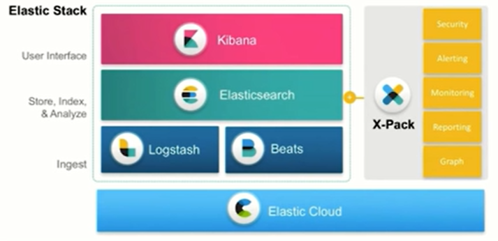
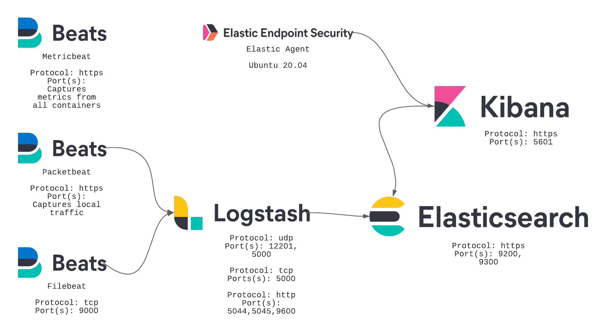
Clúster¶
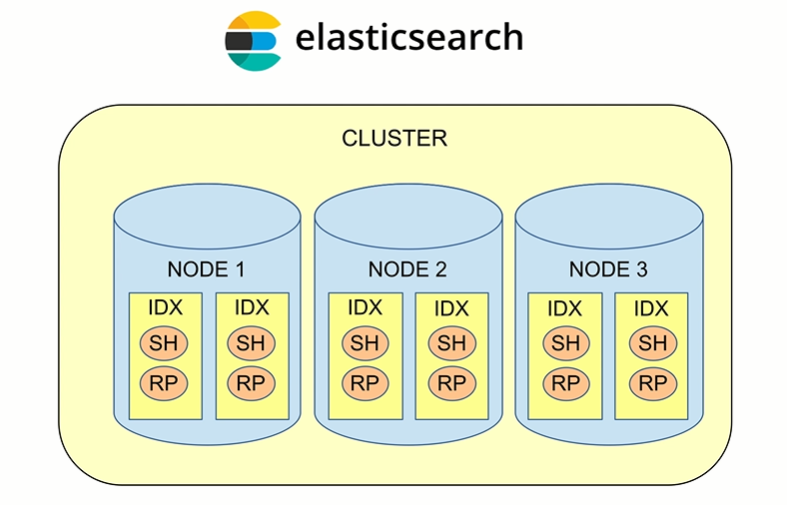
Al conjunto de nodos en ElasticSearch se le conoce como clúster, un clúster puede tener uno o más nodos. Un clúster tendrá un nombre único, y los nodos reconocerán el clúster al que pertenecen por este nombre.
Nodo (Node)¶
Un nodo es un «servidor» de ElasticSearch, normalmente esto se traduce en una sola computadora. Cada nodo tendrá un nombre único e irrepetible en el clúster.
Índice (Index)¶
En ElasticSearch las bases de datos se conocen como Índices. Contienen referencias a una colección de documentos que comparten ciertas características. Un índice también tiene un nombre único.
Por ejemplo, se puede tener un índice «clientes» que referencia a una serie de documentos con datos personales de los clientes de una tienda, todos tendrán un nombre, una dirección, edad, etc.
De la misma forma se puede tener, en el mismo clúster ElasticSearch otro índice «productos», que contendrá documentos describiendo cada uno de los productos que se venden en esa tienda.
A estos índices se pueden hacer consultas, actualizaciones, borrado o agregado de datos usando el nombre correspondiente.
Documento (Document)¶
La unidad básica de información de ElasticSearch es el Documento, y estos documentos son almacenados en formato JSON lo que ofrece una flexibilidad y simplicidad para guardar cualquier tipo de datos.
A la acción de «guardar datos» en la base de datos ElasticSearch se le conoce como «indexar datos» o «indexar documentos»
Fragmento (Shard)¶
Un índice puede contener mucha más información de la que es posible almacenar físicamente en una sola computadora o de la que sería eficiente procesar en una sola computadora. Para solucionar este problema, ElasticSearch puede subdividir los índices en fragmentos más pequeños llamados «shards».¿Cuántos shards debo tener en mi cluster de Elasticsearch? Por defecto se crean 5 shard y 1 replica por shard por cada índice.
Equivalencia de conceptos con Base de Datos Relacional¶
| BD Relacional | ElasticSearch |
| Base de datos | Conjunto de índices |
| Tabla | Índice |
| Fila | Documento JSON |
| Columna | Campo |
- Un índice tendrá documentos del mismo tipo, pero no necesariamente de la misma estructura.
Instalación de Elasticsearch¶
Está desarrollado en Java, por lo que es necesario tener instalado Java en el sistema al menos en la versión 1.8. Es multiplataforma.
No necesita instalación aunque tenemos disponible un instalador para los diferentes sistemas o por instalación de docker. Podéis elegir la instalación que deseéis. Vamos a ver cómo iniciarlo sobre Windows, aunque en Linux sería igual:
- Vamos a la web oficial y descargar la versión deseada
https://www.elastic.co/es/downloads/elasticsearch
- Crea una carpeta llamada “elasticstack” y descomprime el tu descarga de elasticsearch allí
- Vamos al directorio “bin” y ejecutamos ./elasticsearch (en linux desde consola) en windows elasticsearch.bat
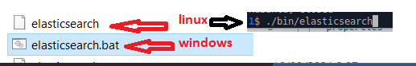
- Tenemos que dejar la ventana abierta mientras queramos trabajar con Elasticsearch
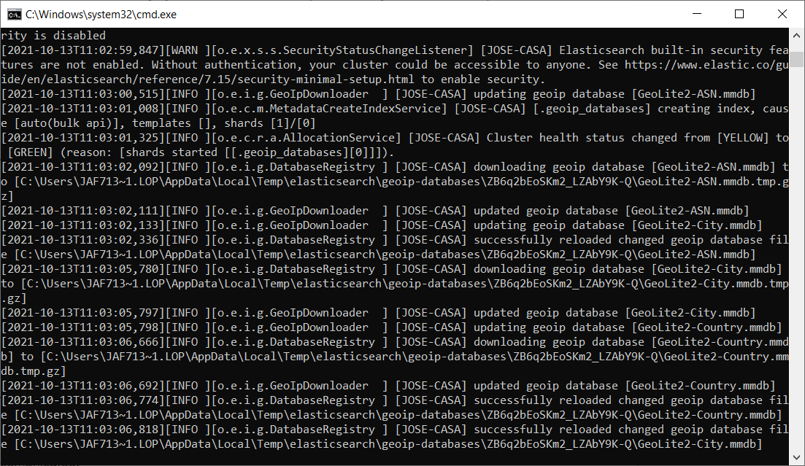
Api de ElasticSearch¶
Tenemos una api REST muy completa para todas las tareas sobre la plataforma:
https://www.elastic.co/guide/en/elasticsearch/reference/current/rest-apis.html
- Devuelve JSON
Elasticsearch escucha por el puerto 9200. Lo único que necesitamos es un cliente Rest para comunicarse como puede ser:
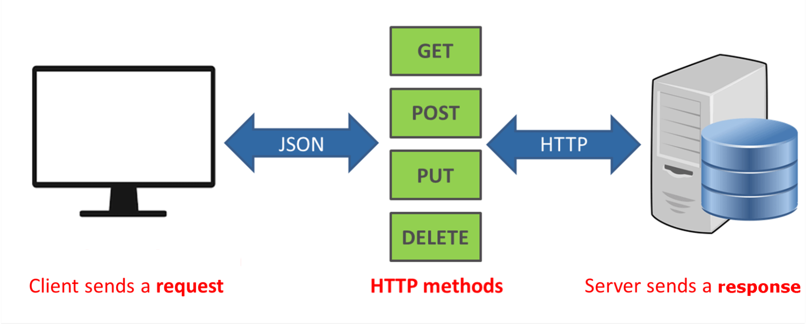
Vamos a probar si nos funciona mediante Curl. Abrimos la consola(en windows ejecutar->cmd) y ejecutamos el comando.
Info
Elasticsearch es muy educado y siempre nos contesta con alguna información. Siempre en JSON
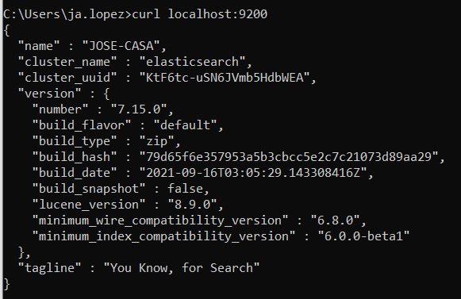
Hemos hecho una operación HTTP GET, que es lo mismo que hacemos en el navegador por defecto al solicitar una página a un servidor web, por lo que nos funcionará
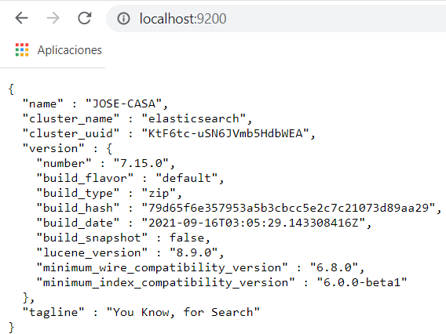
Instalación de Kibana¶
Kibana pertenece al ecosistema ElasticStack, y nos va a facilitar trabajar con Elasticsearch.
Descarga Kibana y descomprímelo en el directorio “elasticstack”
https://www.elastic.co/es/downloads/kibana
Inicia kibana ejecutando si es linux
./bin/kibana
Si es Windows
kibana.bat
Tarda algo de tiempo la primera vez que inicia. Una vez inicia
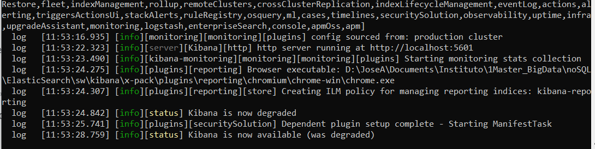
vamos al navegador y accedemos a
localhost:5601
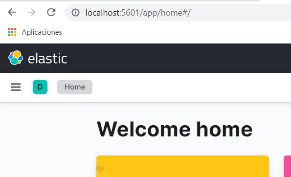
Vamos a la herramienta Devtools. Nos ayudará a crear sentencia Rest en nuestro elasticsearch
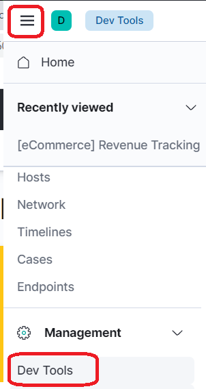
Podemos probarlo enviando una sentencia
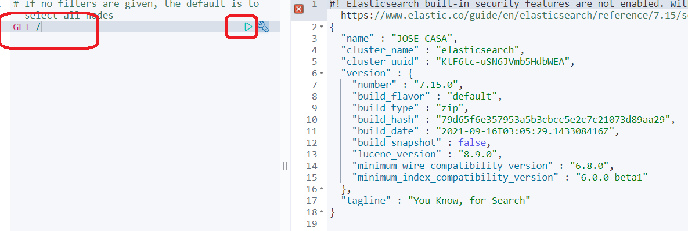
Ejercicios¶
Ejercicio 1
Realiza la instalación de ElasticSearch y Kibana y realiza una captura de pantalla de una sentencia de prueba ejecutada sobre DevTools de Kibana. Entrega un pdf con el resultado.